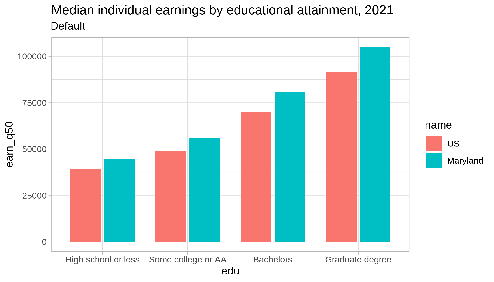
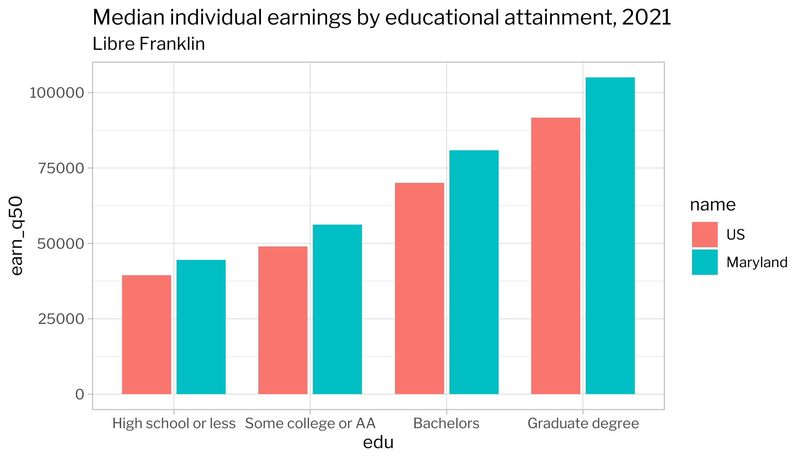
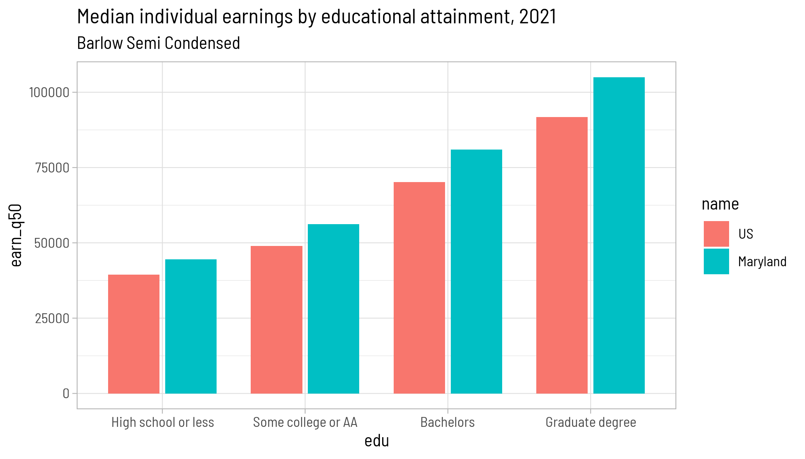
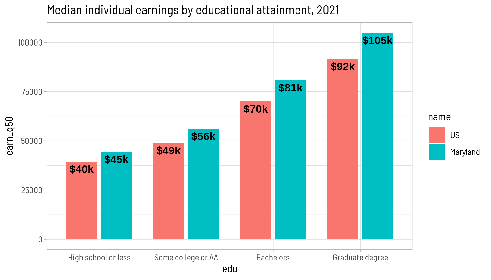
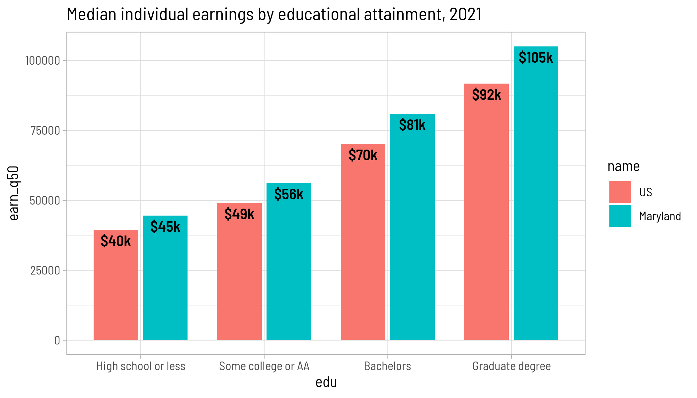

There are a few main types of typefaces; most commonly you’ll see serif, sans-serif, and monospace. Serif typefaces have fancy dangly bits on the ends of different lines, sans-serif (i.e. “without serif”) ones don’t, and monospace typefaces have all characters with the same width (such as typewriters or what you most likely use for code).
Text in general and type specifically can be an afterthought in data visualization, and I don’t often see much discussion on it but as always Datawrapper has a good, concise guide (Muth (2024)). Usually, though, a few things you’ll want to think about when choosing typefaces for data visualization (none of these are hard & fast rules):
My preference is usually to use slightly narrow sans-serif typefaces that are boxy with numerals of pretty uniform sizes. Barlow Semi Condensed is my go-to for standalone charts or online visualizations; Source Sans 3 is one I use a lot when I’m embedding charts into a document alongside long text and tables, all in the same typeface or another one that pairs well with it. Other good ones on Google Fonts are PT Sans, Roboto, Open Sans; Arial works well too but isn’t on Google.
Getting and using fonts
Getting fonts working in R is very annoying. It is a different type of annoying in every operating system. One of the easier ways to do it is with the showtext package, which also installs one called sysfonts. This lets you register a font within your code, including by downloading one directly from Google Fonts, and is generally compatible with ggplot themes and geoms. However, you’ll get weird rendering in your previews in RStudio, and I haven’t yet figured out whether it’s better or worse since switching from RMarkdown to Quarto (or from macOS to Linux). It gets especially weird in combination with specifying figure sizes, or when using other packages like ggtext and cowplot. You’ll also get long streams of warnings, text will come out super small or super huge, etc.
My general advice is to get everything you want set in your chart first before you worry about fonts, and test them out by saving the image (ggsave) or looking at a preview of your document (e.g. quarto::quarto_preview) instead of wondering why it looks bad within RStudio.
Google Fonts has a collection of articles about typography that I recommend if you want to get more into this. I’m particularly leaning on their definitions to keep from mixing up typeface and font; they describe it as “a typeface is to a song as a font is to an MP3 file.”
You’ll need to let your renderer know you’re using showtext via the YAML at the top of your document:
1 Supposedly RMarkdown will detect that you’re using showtext, but the whole thing is so finicky you might as well specify it.
fig.showtext:true
For Quarto:
knitr:opts_knit:fig.showtext:true
I’ve also set
fig-dpi:150
which might need to be adjusted on different computers.
You also need to call showtext_auto() before trying to change any fonts, and you should set the resolution (DPI).
Register a font with sysfonts::font_add or sysfonts::font_add_google. The first of these requires you to find a font on your computer, which can be tricky and is less portable than using the ones from Google. You can use sysfonts::font_paths() to find the paths that are searched for fonts on your computer. You can also adjust the weights used—400 for regular and 700 for bold are industry standards, but you can use different weights if they’re available.
library(dplyr)library(ggplot2)library(showtext)source(here::here("utils/plotting_utils.R"))showtext_auto()showtext_opts(dpi =300)sysfonts::font_families() # before loading any custom fonts
[1] "sans" "serif" "mono" "wqy-microhei"
sysfonts::font_add_google("Libre Franklin")sysfonts::font_add_google("Open Sans")sysfonts::font_add_google("Roboto Condensed")sysfonts::font_add_google("Barlow Semi Condensed", bold.wt =600) # make it a little less boldsysfonts::font_families() # after loading
That setting will then trickle down to any other text-based theme elements in the chart, such as axis titles or legend labels. You could then override specific elements if you want.
p <- justviz::wages |>filter(dimension =="edu") |>ggplot(aes(x = edu, y = earn_q50, fill = name)) +geom_col(position =position_dodge2(), width =0.8) +labs(title ="Median individual earnings by educational attainment, 2021")p +labs(subtitle ="Default") +theme_light()

p +labs(subtitle ="Libre Franklin") +theme_light(base_family ="Libre Franklin")

p +labs(subtitle ="Barlow Semi Condensed") +theme_light(base_family ="Barlow Semi Condensed")

Theme settings only affect theme elements, though. If there were a text-based geom, it gets its font set separately.
p +geom_text(aes(label =dollar_k(earn_q50), y = earn_q50 -2e3), position =position_dodge2(width =0.8), vjust =1, fontface ="bold") +theme_light(base_family ="Barlow Semi Condensed")

If you want to change the font of the geom, you have to do it directly:
p +geom_text(aes(label =dollar_k(earn_q50), y = earn_q50 -2e3), position =position_dodge2(width =0.8), vjust =1, fontface ="bold",family ="Barlow Semi Condensed") +theme_light(base_family ="Barlow Semi Condensed")

Last, if you need to export your chart, you should do that and double check that the text looks right.